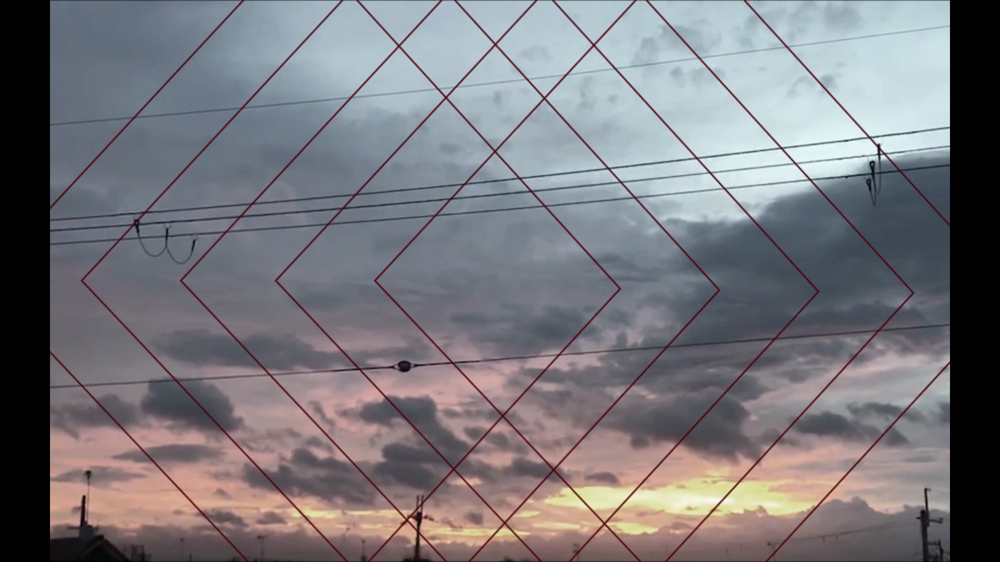

F a s h i o n S h o w B a c k M o v i e
https://youtu.be/SWbYNGdd4Q4大学祭で行われるファッションショーのバック映像の作成を有志で作成しました。
クリエイターの一人を担当しました。
何度も連絡を取り合い、クライアントの望む映像を完成させることができました。
クライアントの要望でいっしんさんの「UZUDEZU」を参考に作成し、線の色はワインレッド、
映像の最初はモノクロにするなどほぼ全ての要望に答えるようにしました。
作品時間：1 分 24 秒 制作期間：1ヶ月
撮影機材：アクションカメラ キーワード 琵琶湖×モーショングラフィックス


移動撮影
友達のバイクの後ろに乗せてもらい撮影した部分です。
実験的に撮影した部分ですが大きなブレもなくきれいだったので採用しました。
水中撮影
琵琶湖と川の中を撮影しました。
藻の流れや水泡が綺麗に撮影できており見所です。
